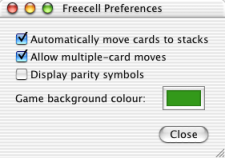

Freecell ohjeet
Freecell ohjeet
Asetukset
Freecell asetuksissa on kaksi asetusta, jotka voivat helpottaa pelaamista.

- Siirrä kortit automaattisesti lopullisiin ruutuihinsa
- Jos tämä asetus on valittuna, pelin kannalta tarpeettomat kortit siirtyvät automaattisesti yläoikealle lopullisille paikoilleen. Ässät siirtyvät paikoilleen automaattisesti joka tapauksessa ja muut kortit siirtyvät, jos niitä ei enää tarvita pelissä.
- Salli useamman kortin siirtäminen kerrallaan
- Tämän asetuksen avulla voit siirtää useamman kortin samasta pinosta toiseen kahdella painalluksella. Voit siirtää saman määrän kortteja nopeammin paikasta toiseen.